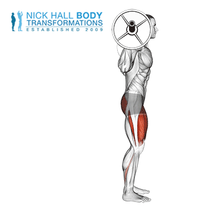

Postavite palico z utežmi na stojalo tako, da je na isti višini kot vaš zgornji del prsnega koša. Postavite svoje telo pod palico, z upognjenimi koleni, tako da palica počiva na hrbtni strani ramen. Odlična vaja za jačanje jedra, stabilnosti in moči nog.
Stojte z nogami na širini ramen ali širše, če je potrebno. Začnite tako, da potisnete boke nazaj in spustite telo tako, da se upognete v bokih, kot da bi sedeli. Nadaljujte ta gibanje navzdol, dokler vaše stegna niso pod kotom, ki je nižji od vzporednice s tlemi, pri tem pa pazite, da so vaša kolena usmerjena v isto smer kot vaše noge. Zadržite za eno sekundo. Potisnite se skozi stopala, medtem ko izravnavate boke in kolena, dokler ne stojite v začetnem položaju.
Trajanje: minut
Kalorije: kcal
Vrsta:
Težavnost:
Kratek opis: